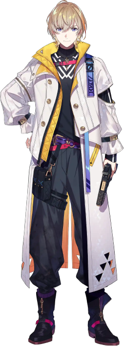
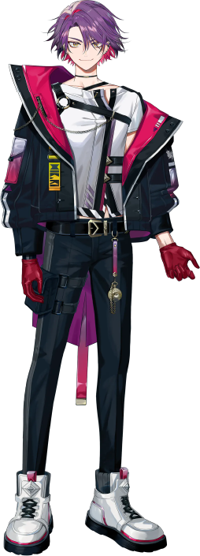

- zeffiroとは
- にじさんじ所属、風楽奏斗と渡会雲雀のコンビ名
実業家の風楽が経営するCafe Zeffiroで渡会がアルバイトをしていることが由来
風楽奏斗
マフィア一家の息子。根が優しく、家業に疑問を持つ一方、首領としての才覚は超一流。
現在の職業は青年実業家で、カフェやレストランを経営している。

渡会雲雀
怪盗一家の跡取り。人の心を掴む正義の「快盗」に憧れている。
金銭目的の盗みはしないので、カフェのアルバイトで生計を立てている。
